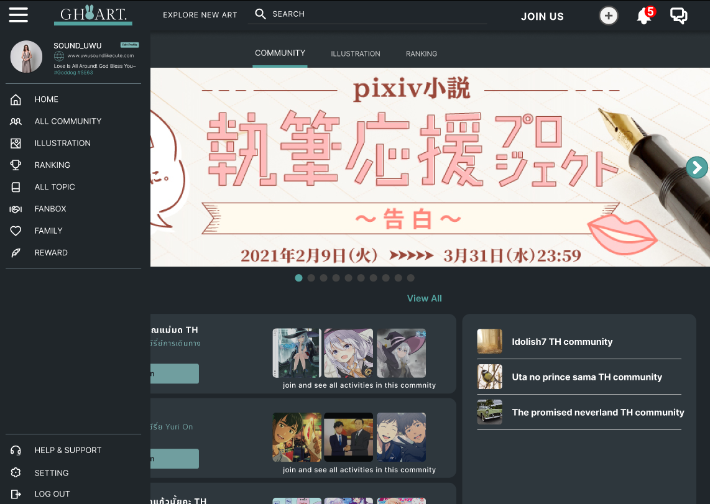
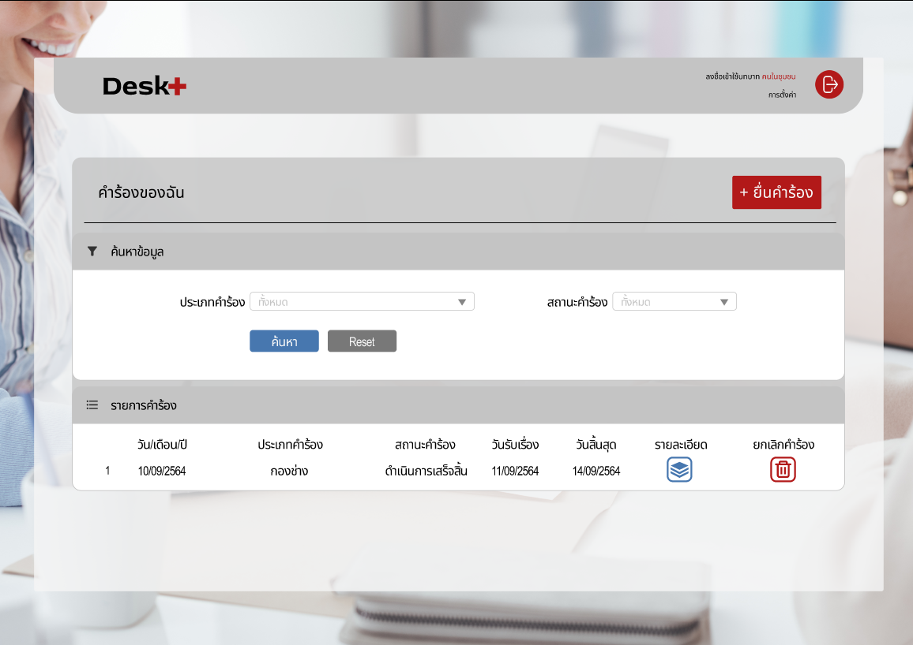
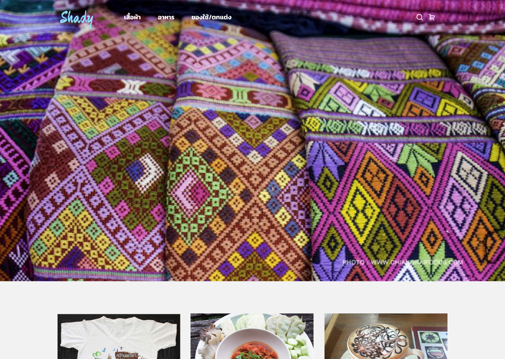

About me.Hello, My name is Panut Kaewmala.
I'm a FrontEnd developer. Graduated
from University of Phayao, majoring in Software Engineering. I have
experience working at a Codium company. I use the Angular programming
language to develop websites.
But I'm always ready to learn new things.
SCROLL
My skills.
css
figma
tailwind
bootstrap
firebase
javascript
docker
ubuntu
visualStudioCode
fork
github
gitlab
python
postman
mysql
dbeaverCE
command prompt
Side Projects.
This is some of the work that I have done since I started university until
I graduated. And there is still work that I did while I was an intern but
couldn't show it. If you want to see other works, check them out at
Github1,
Github2,
Replit
And you can see pictures of some of my work at this
ImageLink.
GHOART
Receive and analyze needs from students who love art within the
university. There are three things they want: community, illustrations,
rankings.
Community : For talking about various
pictures
Illustrations : Showcase various works of
those who have posted images on the website.
Rankings : Showcases the top 10 best
works by most likes, daily, weekly, monthly, most popular among male
users. and popular among female users
Use Figma to create UX/UI and Prototype.


Desk+
Request system for sending requests By dividing users into two parties.
One person is a claims handler called an administrator. The second
person who will submit the request is called the user.
Use HTML,
CSS,
JavaScript,
Django,
MySQL to create website.
Shady
Online shopping website. Use the shopping cart system to manage the
types and quantities of products you want to purchase, There is a form
to fill out with information required for delivery.
Use Angular,
Django,
MySQL to create website

R-remind
Calendar system with notifications via LINE. It will notify you when
events are added. and will be notified again before the activity day.
Use Angular Django to create the website.
Use MySQL is database. Make is responsive
website.